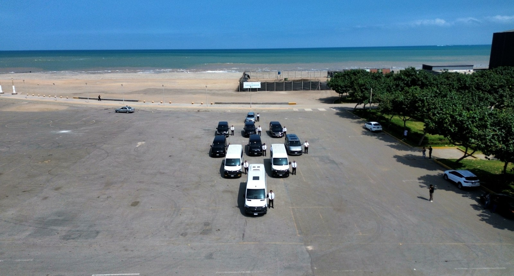
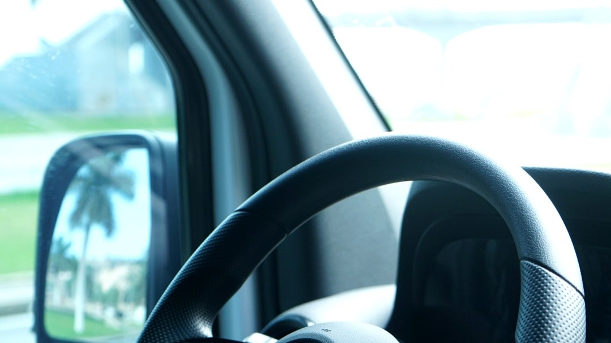
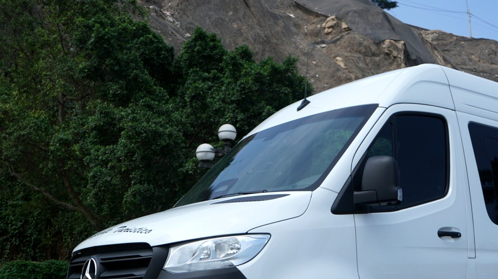

Traslado al aeropuerto Jorge Chávez
Recojo y traslado desde o hacia el aeropuerto de Lima con horario, punto de encuentro y destino coordinados previamente.
Ver servicio
Traslados al aeropuerto Jorge Chávez, movilidad ejecutiva y vans privadas con atención personalizada para cada recorrido.

Black Cab Peru brinda transporte privado en Lima para pasajeros que valoran la puntualidad, la comodidad y una comunicación clara desde la reserva hasta la llegada.
Coordinamos movilidad para aeropuerto, empresas, hoteles, turistas, familias y grupos, definiendo previamente el horario, la ruta y los requerimientos de cada servicio.
Soluciones coordinadas para viajes urbanos, atención de visitantes, agendas corporativas y traslados grupales.
Recojo y traslado desde o hacia el aeropuerto de Lima con horario, punto de encuentro y destino coordinados previamente.
Ver servicioMovilidad privada para hoteles, reuniones, actividades personales y recorridos dentro de la ciudad.
Ver servicioTraslados para ejecutivos, equipos de trabajo, reuniones y actividades empresariales con coordinación directa.
Ver servicioAtención para visitantes que requieren transporte turístico o un airport transfer en Lima con asistencia personalizada.
Transporte para familias, delegaciones e invitados, sujeto a la capacidad y unidad confirmadas durante la reserva.
Recorridos privados por Lima y viajes a otros destinos de acuerdo con el itinerario solicitado.
Tours en Lima Viajes a ParacasLas fotografías corresponden a unidades reales de Black Cab Peru. La disponibilidad y capacidad se confirman para cada servicio.

Una alternativa para movilidad privada y grupal, sujeta a disponibilidad al momento de coordinar el servicio.
Distribución interior pensada para pasajeros que necesitan viajar juntos con una coordinación previa.
Unidades para servicios individuales, familiares, ejecutivos y grupales, según la ruta solicitada.
El servicio prioriza una coordinación ordenada y una experiencia tranquila para pasajeros particulares, turistas, empresas y familias.
Respuestas claras sobre traslados privados, aeropuerto, unidades y proceso de coordinación.
¿Tiene otra consulta? EscríbanosSí. Coordinamos recojos y traslados desde o hacia el aeropuerto Jorge Chávez de acuerdo con el horario y la ruta del pasajero.
Sí. Se coordinan vans privadas para familias, delegaciones y grupos. La unidad y capacidad se confirman al momento de reservar.
El servicio está orientado a pasajeros particulares, turistas, hoteles, empresas, familias y grupos que requieren movilidad coordinada.
Trabajamos con unidades para traslados privados y grupales, incluida una Mercedes Sprinter. La disponibilidad se confirma para cada servicio.
Escríbanos al WhatsApp +51 922 762 633 indicando fecha, horario, punto de recojo, destino y número de pasajeros.
Puede solicitar una cotización con recojo y retorno. La disponibilidad, horarios y ruta se confirman durante la coordinación.
La atención principal es en Lima y también se coordinan viajes a otros destinos según la ruta solicitada.
Envíenos la fecha, el horario, el punto de recojo, el destino y el número de pasajeros. Le responderemos para confirmar los detalles del servicio.
Canal principal para consultas, cotizaciones y reservas.
Aeropuerto, servicios privados, corporativos, turísticos y rutas solicitadas.
Comparta estos datos para recibir una coordinación más precisa.